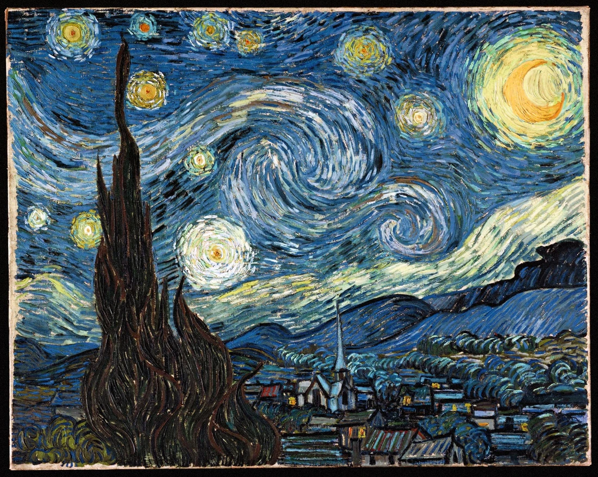
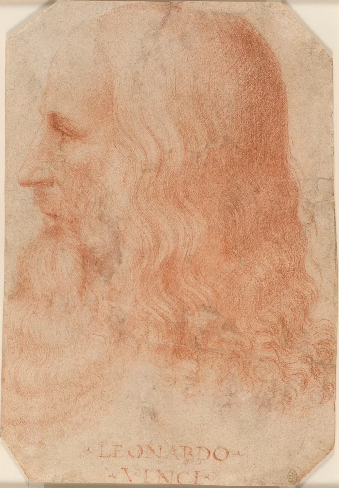
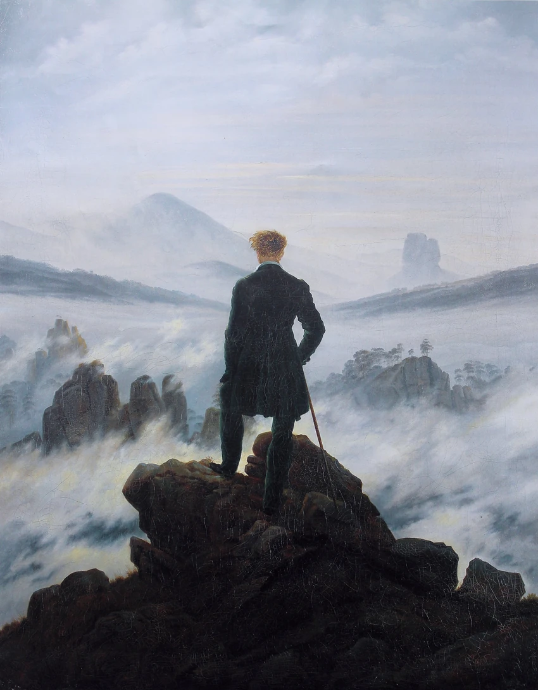

Skip to content
Home
Work
About
Contact
Menu
Home
Work
About
Contact
01 / Home
My
Portfolio
Add your introduction and career direction.
Expertise to be added
Expertise to be added
Explore my work
→
About me

The Starry Night
Vincent van Gogh · 1889

Leonardo da Vinci
Portrait attributed to Francesco Melzi

Der Wanderer über dem Nebelmeer
Caspar David Friedrich · c. 1818
Work
→
About
→
Contact
→